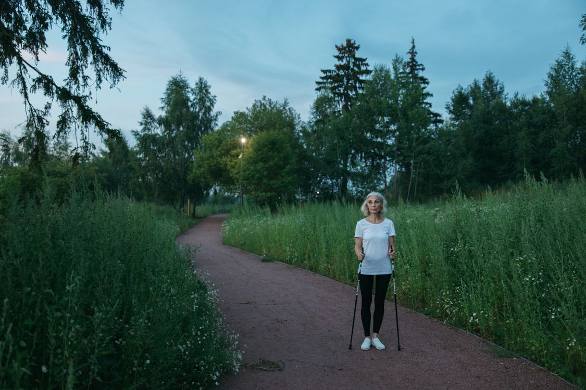

Cadena de valor del proceso asistencial para hipertensión arterial: una ruta que conecta prevención, diagnóstico, tratamiento y seguimiento con resultados que importan a cada persona.
La guía ICHOM de referencia presenta un grupo de trabajo dirigido por el profesor Peter Lamptey, de la London School of Hygiene and Tropical Medicine.
La atención empieza escuchandoMedición clínica y diálogo con la persona
Cuidado cardiovascular
El reto
No basta con medir una cifra
La hipertensión requiere continuidad: detectar a tiempo, confirmar el diagnóstico, acordar un plan y revisar tanto el control clínico como la experiencia de la persona.
¿Qué significa crear valor en salud?
La cadena de valor organiza las actividades que producen atención a lo largo del ciclo. El enfoque de resultados centrados en la persona complementa ese mapa: permite observar qué cambió en la salud, qué carga implicó el cuidado y si el proceso respondió a las prioridades del paciente.
Cuidado centrado en la persona
La ruta continúa dentro y fuera de la consulta
La conversación clínica y las acciones cotidianas forman parte del proceso de cuidado; ambas se conectan con metas acordadas y seguimiento.
Decisiones compartidasComprender el plan, expresar preferencias y resolver dudas ayuda a sostener el cuidado.

Hábitos y continuidadEl acompañamiento se adapta a la vida diaria y a las posibilidades de cada persona.
El recorrido asistencial
Seis etapas, un ciclo conectado
Selecciona una etapa para ver su actividad principal y cómo se integra el apoyo transversal.
La atención no termina al iniciar el tratamiento: el seguimiento vuelve a activar decisiones cuando hacen falta.
Etapa 01
Monitoreo y prevención
La insignia identifica las actividades marcadas como ejecución directa de CEXCA en el taller.
Capacidades transversales
Lo que sostiene cada etapa
Estas actividades atraviesan el ciclo completo y ayudan a que la atención sea comprensible, medible y accesible.
Conocimiento del equipo
Protocolos compartidos para la medición de PA, confirmación diagnóstica, selección terapéutica y lectura de cohortes.
Información a la persona
Explicar el diagnóstico, las metas acordadas, el uso del tratamiento y cuándo solicitar ayuda según el plan clínico.
Medición útil
Registrar PA y factores clínicos con regularidad; revisar datos de cohorte para detectar brechas y orientar mejoras.
Acceso y continuidad
Facilitar consultas, pruebas, medicamentos y transición entre niveles, procurando que las barreras sean visibles.
Medir resultados que importan
¿Cómo sabemos si la ruta está funcionando?
ICHOM propone observar resultados clínicos junto con la carga del cuidado y la salud reportada por la persona. El diccionario define variables, fuentes y momentos de recolección para hacer comparables los datos.
Inicio6 meses12 meses4–6 sem.
Esquema resumido: el momento depende de la variable y del evento clínico.
La guía describe una medición mínima anual de presión arterial y una revisión a las 4–6 semanas tras iniciar o cambiar el tratamiento para ciertos resultados clínicos.
01
Control de la presión arterial
Presión sistólica y diastólica registradas por el equipo clínico.
Mínimo anual02
Supervivencia y eventos cardiovasculares
Estado vital y eventos como enfermedad isquémica, cerebrovascular o urgencia/emergencia hipertensiva.
Seguimiento anual03
Efectos secundarios y eventos adversos
Identificar efectos del tratamiento y revisar su evolución tras cambios relevantes.
Anual · 4–6 semanas*04
Acceso y carga del tratamiento
Explorar barreras para recibir atención o medicamentos y número de tabletas al día.
6 meses · anual05
Salud reportada por la persona
Calidad de vida, satisfacción, creencias sobre medicamentos y adherencia, mediante instrumentos definidos.
Línea base · seguimiento
* La guía establece momentos distintos según el resultado y el cambio terapéutico; revisar el diccionario antes de implementar cada medición.
Límites del ejercicio
¿A quién incluye esta cadena?
El alcance delimita qué recorrido se analiza y cuándo se requiere articular la atención con otro servicio.
Incluye
Personas adultas con diagnóstico confirmado de hipertensión esencial primaria, no complicada o en manejo ambulatorio integral.
Seguimiento continuo del control tensional y de factores relacionados con el cuidado.
Comorbilidades relacionadas y controladas, según los límites descritos en el instrumento CVPA.
Alternativas farmacológicas y no farmacológicas dentro del plan clínico acordado.
Se excluye o se remite
Hipertensión gestacional o preeclampsia.
Hipertensión secundaria compleja de causa endocrina o renovascular.
Enfermedad renal crónica avanzada (estadios 4–5 o diálisis).
Emergencia hipertensiva o evento agudo: requiere atención inmediata y una ruta especializada.
Nota de alcance: el taller define el ingreso como confirmación diagnóstica e ingreso al programa, y el punto final como revisión anual dentro de un ciclo crónico que continúa. Los umbrales que aparecen en el instrumento son parte del ejercicio académico, no una recomendación clínica universal.
Idea para llevar
La cadena crea valor cuando no pierde de vista a la persona.
Procesos coordinados, acceso oportuno y resultados compartidos ayudan a orientar la mejora continua de la atención.
Instrumento académico Cadena de valor del proceso asistencial (CVPA) — CM1: Hipertensión arterial. Metodología Porter y Teisberg (2008). Incluye el alcance de la condición y las observaciones por etapa.
International Consortium for Health Outcomes Measurement (ICHOM). Hipertensión en países de ingresos bajos y medianos: guía de referencia para la recolección de datos. Versión 5.0.1, revisión del 27 de enero de 2023.
Zack, R. et al. (2019). Mejora de la medición de resultados en hipertensión en países de ingresos bajos y medianos. Hypertension, 73(5), 990–997. DOI: 10.1161/HYPERTENSIONAHA.118.11916.
Diccionario de datos ICHOM para hipertensión, versión en español suministrada para esta actividad. Define variables, dominios, fuentes y momentos de recolección.
Fotografías ilustrativas de Pexels: Antoni Shkraba (medición de presión), Cedric Fauntleroy (consulta) y Anastasia Shuraeva (actividad cotidiana). Imágenes usadas bajo la licencia gratuita de Pexels.
Material académico y educativo. Esta página resume los documentos de referencia; no es una guía de diagnóstico o tratamiento, ni sustituye la valoración de profesionales de salud. ICHOM es citado como fuente y esta página no representa una publicación oficial de ICHOM.